Модели и цены
Цена по запросу
Позиции нет в прайсе от 27.10.2026; цену уточняйте перед заказом.
Инфракрасная плёнка Ace Floor
Производитель: Ace Floor (Южная Корея)
Инфракрасная пленка Ace Floor представляет собой греющие карбоновые полосы соединенные медно-серебряной шиной и покрытые с обоих сторон пленкой из высокотемпературного полиэстера .Пленка имеет дополнительную заземляющую шину и покрыта слоем алюминия, что надежно защищает человека от поражения электрическим током.Конструкция кабеля Ace Floor

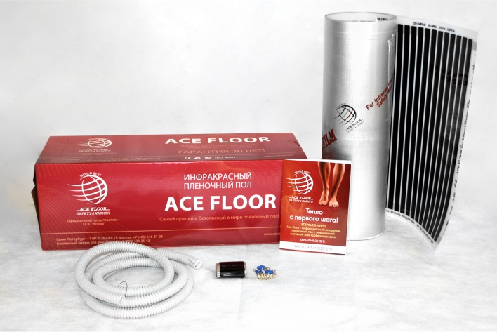
Технические xарактеристики
| Напряжение | 220 В / 50 Гц |
| Номинальная мощность | 240 Вт/м2 |
| Толщина пленки | 0,833 мм |
| Ширина пленки | 50 см |
| Горючесть | не горит |
Области применения кабеля Ace Floor
Пленочный теплый пол Ace Floor используется для основного и дополнительного обогрева жилых, офисных, складских, бытовых и общественных помещений. Возможен обогрев зимних садов, теплиц и оранжерей. Греющая пленка Ace Floor может укладываться под любые напольные покрытия: паркет, ламинат, линолеум, ковролин, кафель и т.д. Также пленку можно укладывать на стены, потолок, под ГВЛ, ГКЛ и прочие панели.
Под паркет, ламинат, ковролин, линолеум
Монтаж и безопасность
1. Определите и подготовьте место для установки терморегулятора и датчика температуры.
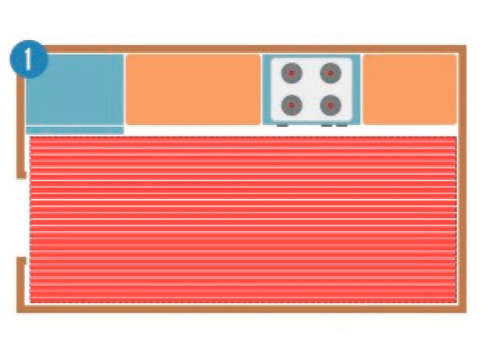
2. Очистите область укладки пленки от мусора, пропылесосьте или подметите комнату.
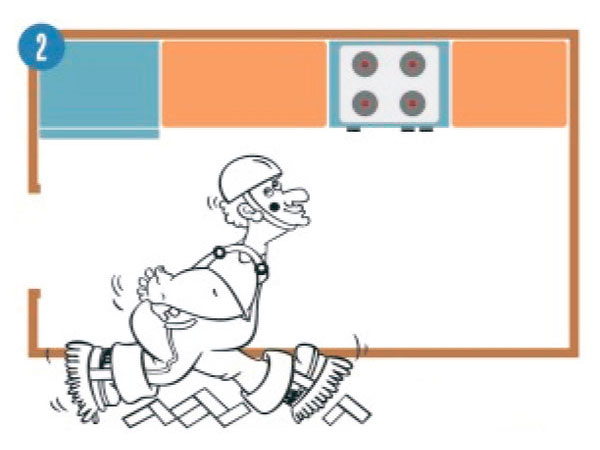
3. Отмерьте нужные длины и разрежьте пленку на полосы по линиям разреза, которые нанесены на пленке. Длина полосы пленки должна быть меньше длины комнаты, с каждой стороны оставьте зазор в 5 -10 см. Рекомендуем укладывать полосы вдоль длинной стены помещения.
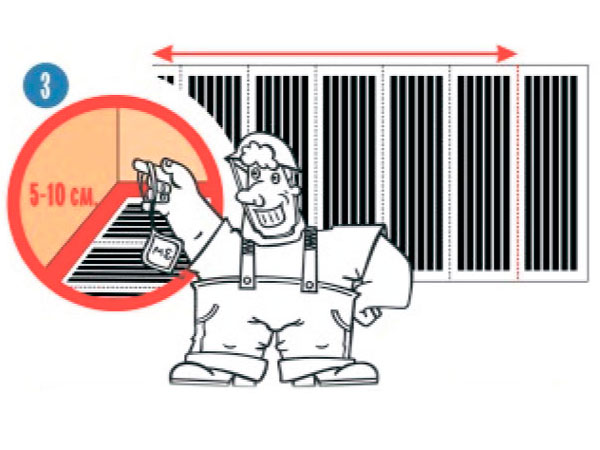
4. Изолируйте места разрезов медной контактной полосы с одной стороны термопленки с помощью полосок битумной изоляции из комплекта поставки.
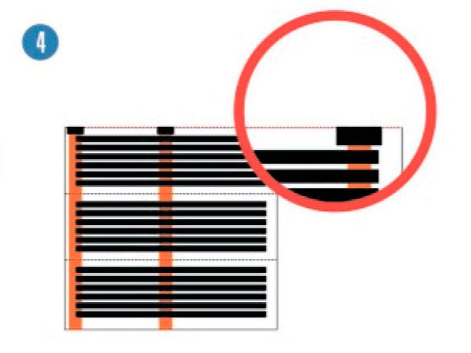
5. Возьмите дырокол (в комплект поставки не входит) и пробейте отверстия в термопленке на расстоянии 10 мм от края в тех местах, где проходит медная контактная полоса. Отверстия пробиваются с противоположной стороны от изоляции. Медная контактная полоса предназначена для подключения силовых проводов, полоса в центре - для подключения заземления.
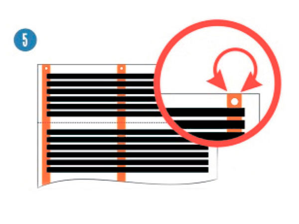
6. Удалите фольгу вокруг отверстия. Для этого со стороны фольги лезвием ножа сделайте надрезы вокруг отверстия на глубину фольги. Вы получите прямоугольник размером 16 х 14 мм. Подержите пленку в местах разреза над пламенем зажигалки в течении 5-6 секунд. Вы сможете легко убрать фольгу, поддев ногтем.
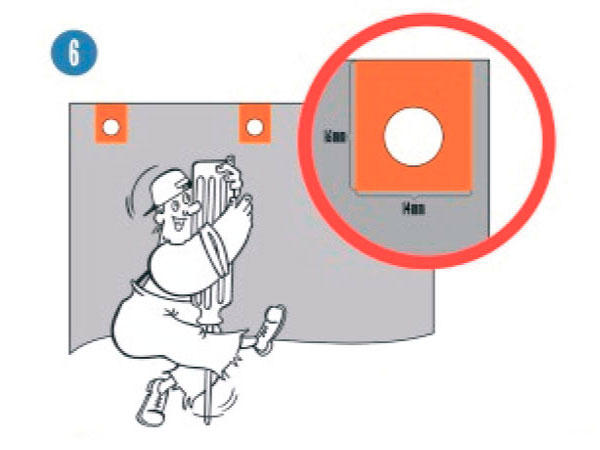
7. Тонкой отверткой или кончиком ножа приподнимите пластиковую пленку над медной полосы со стороны нагревательных элементов и вставьте контакт под пленку так, чтобы плоская сторона контакта прилегала к медной полосе, а отверстия в нагревательной пленке и в контакте совпадали.
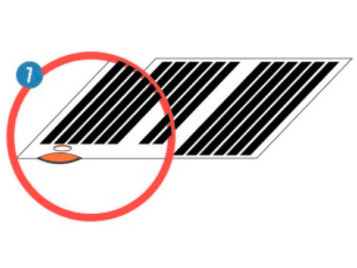
8. Вставьте в отверстие заклепку из комплекта и зажмите ее дыроколом, надежно прикрепив контакт к медной полоске. Также поставьте контакт на медную полоску с другого края нагревательной пленки. Это контакты для присоединения силовых проводов.
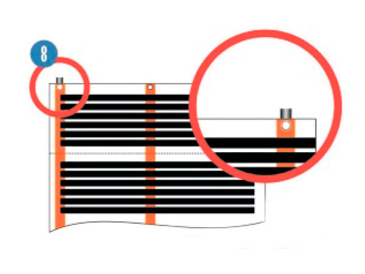
9. Удалите защитный слой и алюминиевую фольгу с небольшого участка вокруг отверстия над центральной медной шиной. Наложите на шину контакт, совместите отверстия, вставьте заклепку и зажмите заклепку дыроколом, прочно прикрепив контакт к медной шине. Это контакт для заземляющего провода.
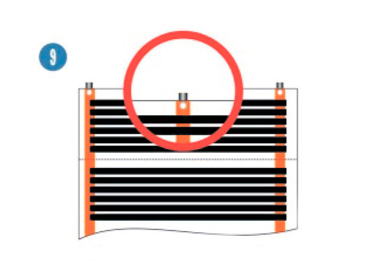
10. Сделайте штробу в стене к месту установки терморегулятора для проводов и датчика температуры. Сделайте штробу в ролу для датчика температуры. При использовании регулятора мощности датчик температуры не требуется.
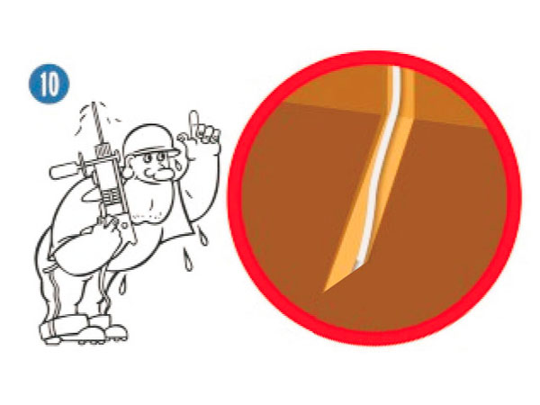
11. Уложите полосы термоплёнки на пол одна рядом с другой так, чтобы покрыть всю поверхность, намеченную для обогрева. Изолированные края полос термоплёнки располагайте с одной стороны комнаты, а контакты с другой. Полосы укладываются алюминиевым слоем вверх. Полосы пленки не должны находить одна на другую. Закрепите их с помощью любой липкой ленты.
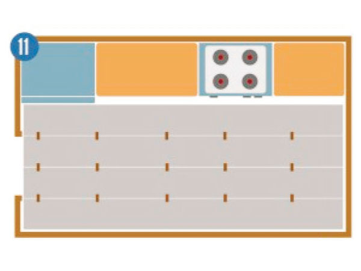
12. Возьмите провод сечением не менее 1,5 кв. мм. Снимите изоляцию на расстоянии 5-7 мм. В нужных местах вставьте провода в контакты, расположенные на одной стороне всех полос термоплёнки, и зажмите их пассатижами. Точно также соедините все контакты, расположенные на другой стороне термоплёнки другим проводом. Это силовые провода.
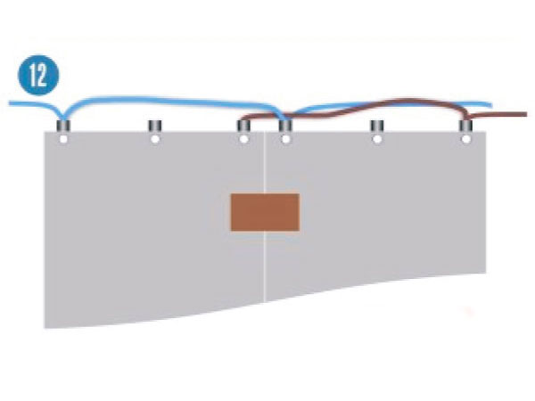
13. Каждый контакт изолируйте битумной изоляцией, которая входит в комплект поставки. Все полосы термоплёнки подсоединяются к сети параллельно. Проведите провода вдоль стены и по штробе к терморегулятору и подсоедините их к клеммам нагрузка согласно схемы терморегулятора.
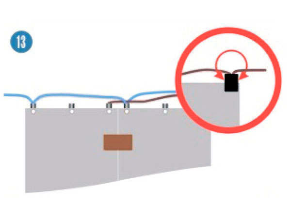
14. Возьмите провод сечением не менее 1,5 кв.мм. Снимите с него изоляцию на расстоянии 5-7 мм, в нужных местах вставьте провода в контакты, расположенные в центре каждой из полос термопленки и зажмите их пассатижами. Каждый контакт изолируйте плоской изоляцией, которая входит в комплект поставки. Это провод заземления. Проведите провод вдоль стены и по штробе к терморегулятору и присоедините к клемме заземления.
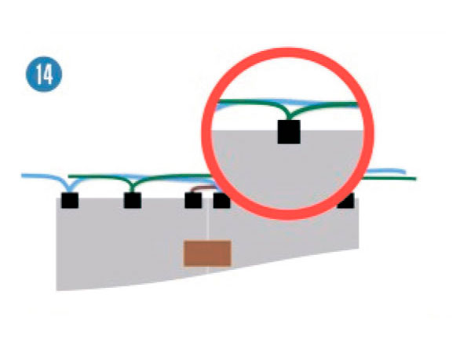
15. Включите терморегулятор и убедитесь, что все полосы термоплёнки греются. Выключите терморегулятор. Пленочный пол уложен. Укладывайте сверху любое из напольных покрытий (половая доска, ламинат, ковролин линолеум) в сответствии с рекомендациями производителя покрытия.
- Не производить монтажные работы при повышенной влажности
- Не производить монтажные работы при температуре ниже 0° С
- Не перегибать пленку на участке 5 см на угол 90°
- Не устанавливать крупногабаритную мебель на пленку
- Не использовать для крепления пленки гвозди
- Не проделывать в пленки отверстия самостоятельно
- Нельзя укладывать пленку внахлест, подключайте провода согласно указанной в инструкции схеме подключения
Принцип работы инфракрасного тёплого пола
Обогрев происходит за счет инфракрасного излучения, с длинной волны 5-20 мкм. Инфракрасное излучение поглощается окружающими предметами, которые в свою очередь начинают отдавать полученное тепло воздуху. Такой вид обогрева имеет ряд преимуществ по сравнению с конвекционными (электрические и водяные конвекторы) и комбинированными (радиаторы отопления) системами. За счет распространения тепловой энергии снизу вверх – от пола к стенам и потолку происходит значительная экономия электроэнергии. Датчик температуры устанавливается на высоте 1,5 метров, соответственно зона комфортной температуры помещения находится в нижней части помещения, где собственно и находится человек. Верхняя (предпотолочная) область при этом нагревается в последнюю очередь и имеет меньшую температуру, что позволяет значительно сэкономить электроэнергию. Гарантийный срок — 20 лет с момента продажи.Гарантийные обязательства
Если в течение гарантийного периода в купленном у продавца изделии появляется дефект по причине его несовершенной конструкции, нарушения технологий изготовления или некачественных материалов, продавец гарантирует выполнение бесплатного гарантийного ремонта дефектного изделия (или его части) при соблюдении покупателем рекомендаций и требований, изложенных в инструкции по установке и эксплуатации инфракрасного пленочного пола.
Документы перенесены из прежнего каталога. Перед использованием проверяйте срок их действия.